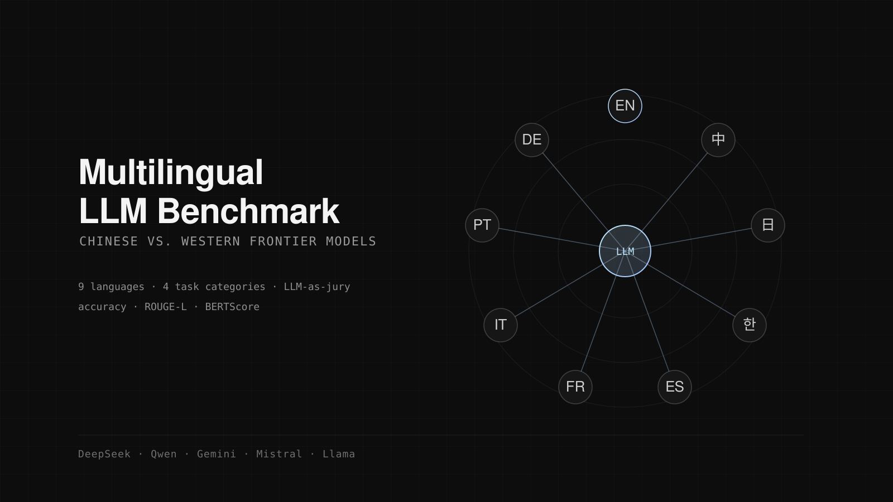

Multilingual Benchmark
Spending a year in Beijing made an obvious question hard to ignore: do Chinese and Western frontier models actually differ in capability, or only in the languages their evaluations happen to be written in? Most published benchmarks are English-first, with other languages bolted on as translations, which measures translation quality as much as it measures reasoning.
The design covers nine languages (English as control, the CJK group, and a Romance group) across four task categories. Models under test: DeepSeek V3, Qwen-Max, Gemini 2.5 Pro, Mistral Large and Llama 3.3 70B via Groq. Closed-ended tasks are scored on accuracy; open-ended tasks on ROUGE-L and BERTScore, plus a jury of three models (Gemini 2.5 Pro, DeepSeek V3, Mistral Large) so that no single model's preferences dominate the grading.
The methodology is finished. The blocker is money: adding Claude and GPT-4o to the comparison requires research API credits, and running nine languages across five models is not a hobby budget. Applications are in. Until then it stays a well-specified experiment waiting for its tokens.
- Stack
- DeepSeek V3, Qwen-Max, Gemini 2.5 Pro, Mistral Large, Llama 3.3 70B
- Status
- Designed · blocked on API credits
- Year
- 2026
- Code
- MultilanguageBenchmark

Next: Armario